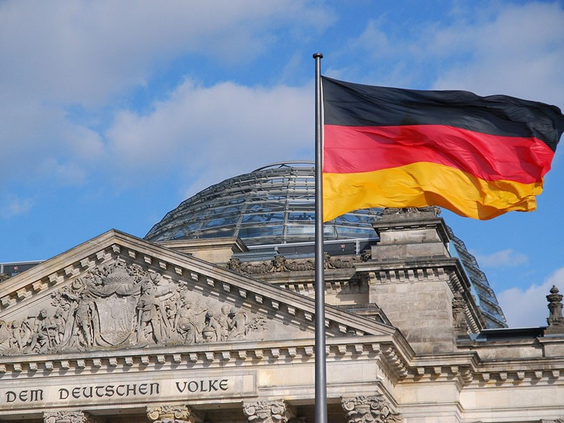
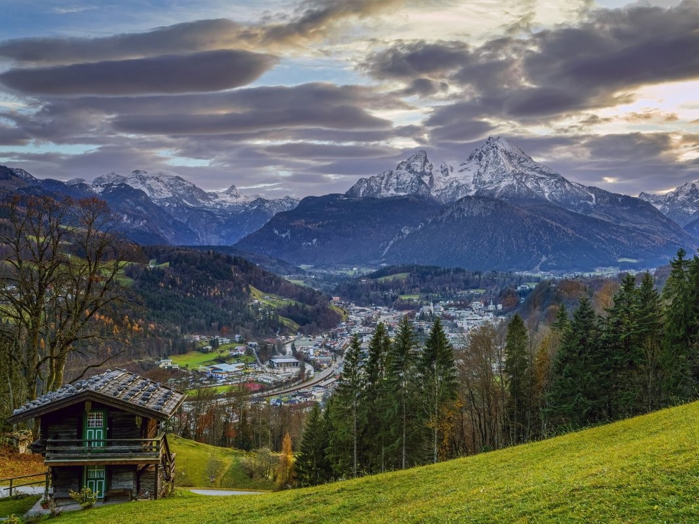
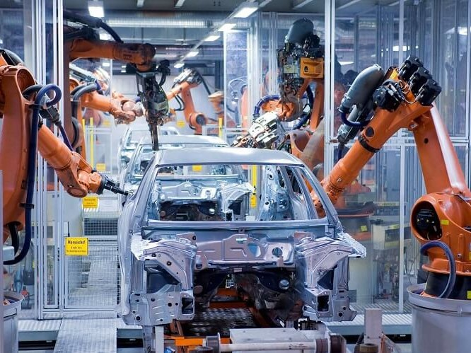

Німеччина
Загальні відомості про країну
Німеччина – одна з найбільших за населенням країн в Європі. У ній живуть 82,3 мільйона людей. Але її площа – 357 тисяч кв. км – значно менше, ніж у Франції. Розташована Німеччина в самому центрі Європи. У східній частині країни знаходиться її столиця – Берлін. Це велике місто з населенням 3,5 млн осіб. Берлін – це великий промисловий і культурний центр. Берлінський університет імені Гумбольдта готує фахівців в різних галузях знань з 1809 року. Берлінський зооопарк відомий на весь світ унікальною колекцією своїх мешканців. Поруч з Берліном знаходиться невелике місто Потсдам, в минулому був резиденцією прусських королів. Серед потсдамских палаців відрізняється розкішшю і красою королівський палац Сан-Сусі (що означає “Без турбот”). У 1945 році в іншому потсдамському палаці Цеціліенхоф пройшла Берлінська конференція, що визначила розвиток Європи і всього світу на довгі роки вперед. Сучасна Німеччина входить до Європейського Союзу. Главою держави є президент, але вся виконавча влада знаходиться в руках уряду на чолі з канцлером. Главою уряду стає лідер партії, що переміг на виборах в німецький парламент – Бундестаг. На даний момент президентом Німеччини є Франк-Вальтер Штайнмаєр, а канцлером – Олаф Шольц. Офіційна мова Німеччини – німецька, а грошова одиниця – євро
Клімат і географія
Північні землі Німеччини – це низовини з пагорбами і озерами, але чим далі на південь, тим більше гористою стає місцевість. Рейнські Сланцеві гори, Шварцвальд, Тюрингенский Ліс (насправді це не ліс, а гори, порослі лісом), Гарц чергуються з рівнинами. А на півдні виступають вже відроги Альпійських гір. Головна німецька річка, Рейн, бере свій початок в Альпах. І про Рейн, і про гори в Німеччині розповідають безліч легенд. Клімат в країні помірний, сприятливий для сільського господарства. Взимку лише в північно-східних районах середні температури спускаються нижче нульової позначки. У Південній Німеччині навіть вирощують виноград. Повсюдно поля засіяні пшеницею, різними овочами, особливо картоплею. За землями в Німеччині доглядають так ретельно, що навіть бур’яни іноді сіють навмисне, на спеціально відведених полях. У тваринництві особливо розвинене свинарство.
Промисловість і народи Німеччини
Але перш за все Німеччина – це країна високорозвиненої, передової промисловості. У Рурі вже в давнину добували вугілля. І зараз Німеччина посідає перше місце в світі з видобутку бурого вугілля. Країна займає передові позиції у важкій промисловості і машинобудуванні. Тут виробляються автомобілі “Мерседес”, “Фольксваген”, “Ауді”, БМВ, “Опель”. Видатних успіхів досягла німецька хімічна промисловість. Німці внесли великий вклад в розвиток науки і культури. Імена Гете, Шилера, Бетховена, Рентгена, Планка відомі всьому світу. Адміністративно Німеччина ділиться на шістнадцять земель. Назви деяких з них нагадують про стародавні німецькі племена, що колись населяли ці території. Наприклад, в Саксонії колись жили сакси, в Баварії – бавари, в Тюрінгії – тюринги. Незважаючи на загальне походження німецькі племена далеко не в усьому схожі один на одного. Ці відмінності збереглися і в сучасній Німеччині. У кожної німецької землі своє обличчя, свої національні костюми, свої улюблені страви.